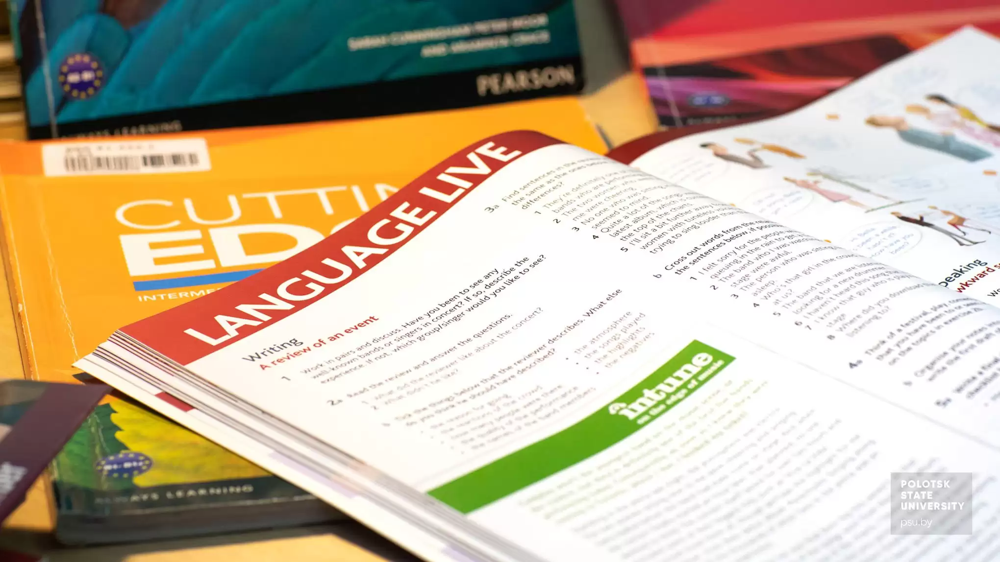

Future Career
My major is World Languages, Literatures, and Cultures. I can work in translation, international relations, or academia. However, I plan to pursue Master's Degree in Education and become a teacher.
Skills Required
- Fluent in multiple languages
- Research and critical analysis
- Strong writing and communication